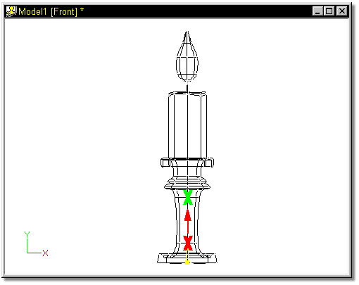
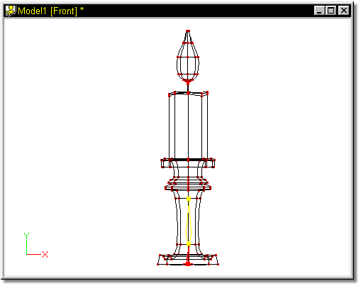
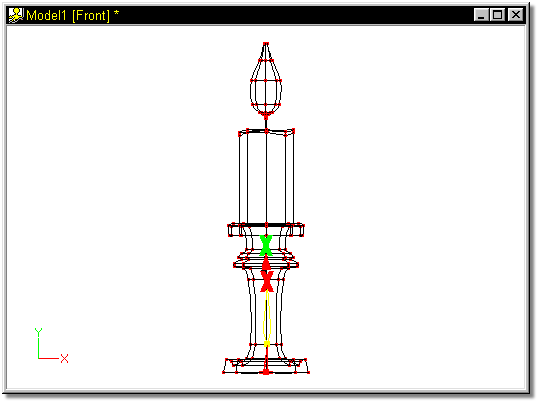
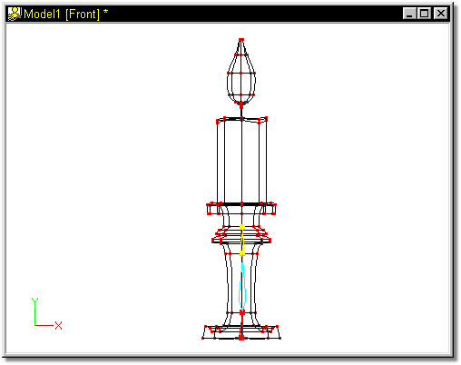

Continue by adding a second bone into the model. This is done by clicking the
Add button (or pressing A on the keyboard) and clicking near the thin end of
the first bone (red X in Figure 5).
Continue by adding a second bone into the model. This is done by clicking the
Add button (or pressing A on the keyboard) and clicking near the thin end of
the first bone (red X in Figure 5).


Figure 5
While holding the mouse button down, drag upwards (shown by the red arrow in Figure 5), and release the mouse button on the green X.
The resulting bone should look similar to Figure 6:

The bone that was just added does not attach to the patriarch bone, since the patriarch represents the base of the model, and not a part of the model needed for IK (it will not affect the motion of the rest of the model).
Add another bone in a similar manner to the previous one, being sure to click on top of the upper handle of the previous bone (red X in Figure 7). This will automatically attach the two bones.

Figure 7
Drag the mouse in the direction of the red arrow, and release the mouse button at the green X.
The resulting bone should look similar to Figure 8.
